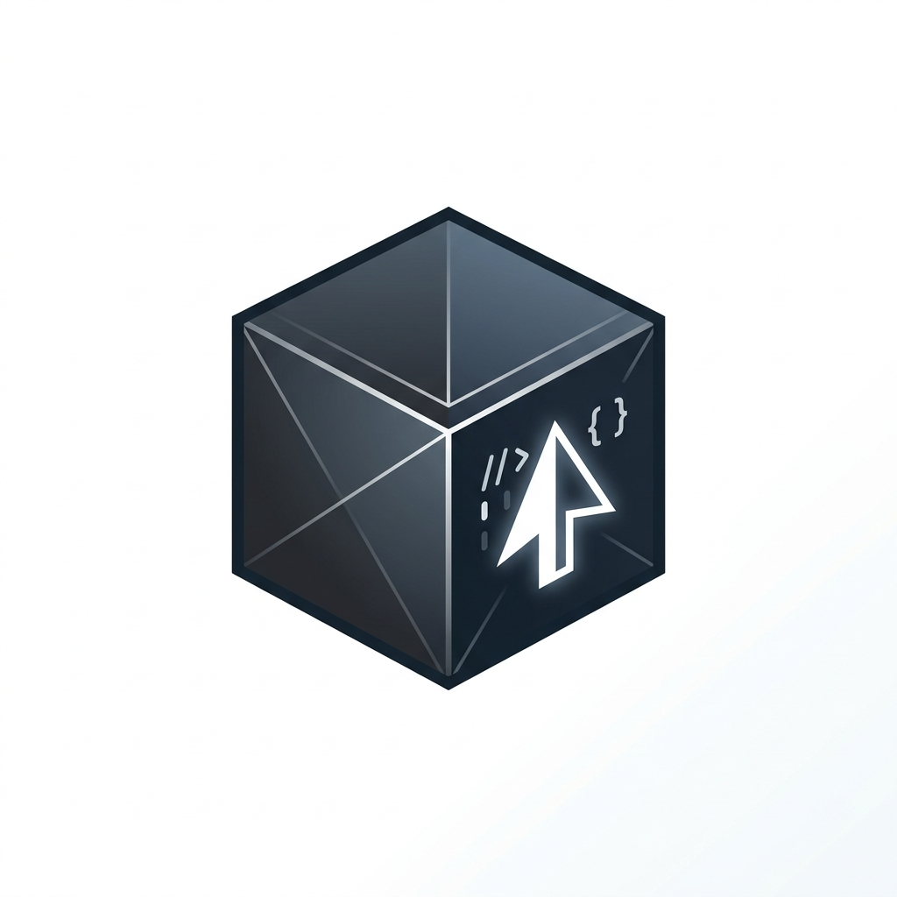

Editor de código construído sobre a base do VS Code, integrando modelos avançados de IA diretamente no fluxo de trabalho de programação e edição do projeto.
Acessar ferramentaO Cursor é um editor de código (IDE) inteligente desenvolvido pela Anysphere. Baseado no VS Code, ele é compatível com todas as extensões, atalhos e configurações que os desenvolvedores já utilizam, mas traz a inteligência artificial incorporada no cerne da aplicação.
Diferente de assistentes convencionais que funcionam em abas separadas, o Cursor entende todo o repositório, permitindo alterações automáticas em múltiplos arquivos com um único comando.
O Cursor serve para acelerar a criação, refatoração, documentação e correção de código. Ele permite fazer perguntas técnicas sobre qualquer trecho do projeto, gerar testes automatizados, buscar bugs e implementar novas funcionalidades rapidamente.
Entre seus destaques estão o Cursor Tab (autocompletar preditivo que antecipa o próximo passo do programador), o Composer (criação de arquivos e alterações simultâneas) e a indexação inteligente de repositórios locais para consultas precisas.
O Cursor oferece um plano Hobby gratuito que inclui limites generosos de autocompletar e requisições básicas. Para equipes e profissionais que precisam de acesso ilimitado aos modelos mais rápidos e potentes, há o plano Pro.
Programadores iniciantes, engenheiros de software seniores, desenvolvedores full-stack e qualquer profissional que queira aumentar sua velocidade e foco ao escrever código.
Sim. Para quem programa, é atualmente considerado uma das ferramentas mais revolucionárias para elevar a produtividade técnica diária.